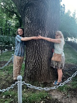
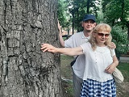
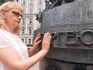
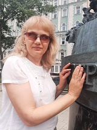
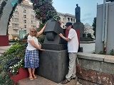
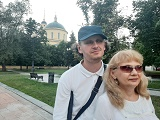
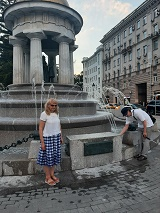

Страницы авторов "Тёмного леса"
Литературный Кисловодск и окрестности
Пишите нам! temnyjles@narod.ru
В своё время Маяковский в стихотворении "Юбилейное" приглашал А.С. Пушкина на прогулку, оставив постамент его памятника пустым на одну ночь. Но если бы Владимир Владимирович захотел повторить своё приглашение сегодня, то удивился бы, не найдя своего гениального собрата по перу на привычном месте. Что же произошло, и где мы сейчас встречаемся с памятником Пушкину? На эти и многие другие вопросы вы получите ответы, пройдя с нами по маршруту, который был популярен у москвичей XIX века и любим самим Александром Сергеевичем. Какая же была она - Пушкинская Москва, чем славилась и гордилась?
Тверской бульвар знает и помнит многое: театр имени Пушкина, обязанный своей славой вовсе не поэту, хотя он оставил заметный след в театральной жизни Москвы. Дуб, который наверняка в молодости видел Пушкина, спешащего с визитом в семейство Гончаровых, но не знающего, как его примут. Поэт называл Натали Гончарову своей сто тринадцатой любовью. Что это - роковое совпадение или просто ирония судьбы. История любви, обручения и венчания Александра и Натали до сих пор удивляет своей запутанностью, бурей страстей и неоднозначностью оценок.
Москва танцевала и веселилась на балах Йогеля в доме Кологривовых (сейчас МХАТ имени Горького). Между тем это были самые целомудренные балы для самых юных. Там-то Александр впервые увидел натали.
Тверской бульвар выводит нас на площадь Никицких ворот. Здесь мы побываем храме Большое вознесение, где Венчались Александр Пушкин и Наталья Гончарова. Погасла свеча, упало кольцо, что ещё? Однако поэт был счастлив. При входе в храм нас встречают мозаичные медальоны влюблённых. А возле храма Александр и Натали всегда рядом, уединились в беседке-ротонде, отгороженные от мира струями одноимённого фонтана. Среди этих струй надо обязательно найти особенные, которыми можно утолить жажду тела, но не только. Они могут подарить любовь тому, кто ждёт её.
Наше путешествие начинается с прибытия на станцию метро "Пушкинская". Она была открыта в декабре 1975 года и носила проектное название пушкинская площадь.
Станция облицована серым мрамором и украшена восемью чеканными панно с изображением сюжетов из произведений А.С. Пушкина. Платформы от зала отделены двумя рядами колонн. Относится станция к таганско-краснопресненской линии. В центре зала переходы на станции Чеховская и Тверская. Последняя была открыта в 1979 году и до 1991 года носила название - Горьковская, как и нынешняя Тверская улица, поэтому в народе этот пересадочный узел называли писательским треугольником.
Нам же нужно выйти в город. Так что поднимаемся по эскалатору, и выйдя из стеклянных дверей попадаем в длинный разветвлённый подземный переход и находим выход номер 5.
Поднимаемся на поверхность, и Александр Сергеевич встречает нас.
В своё время этот памятник вдохновил В.В. Маяковского на такие строки в стихотворении "Юбилейное":
У нас то же есть сейчас возможность поздороваться с Александром Сергеевичем и поговорить с ним. Только, в отличие от Маяковского, мы попросим рассказать его о нём самом и о событии, которое стало для поэта одним из самых решающих в жизни -встречей с его главной любовью и женой.
Памятник открыт в 1880 году. Скульптор Опекушин. Выполнен из бронзы. Сейчас имеет зеленоватый налёт, как будто покрыт паутиной.
Пушкин предстаёт перед нами в полный рост на постаменте из коричневого гранита. На нём находится ещё один прямоугольник, поменьше, тёмно-серый.
На пьедестале запечатлены строки стихотворения - "Я памятник воздвиг себе нерукотворный". В 1937 году постамент меняли, и текст был заменён на изначальный Пушкинский, который нам известен со школьной скамьи. Во времена установки и открытия памятника в угоду цензуре Василий Жуковский немного изменил одну строфу. На одной стороне было выбито:
Продолжалась строфа так:
На другой стороне постамента часть другой строфы:
В первом варианте пьедестала при написании были соблюдены правила дореволюционной орфографии. Сейчас Оригинальную надпись мы можем видеть только на задней части постамента - сооружён в 1880...
поэта мы видим в полный рост. Пальцы его правой руги заложены за борт сюртука. Левая рука отведена назад со шляпой. Сверху надет плащ с пелериной, на шее бант. Памятник огорожен низкими столбиками, между которыми натянуты цепочки. Каждый столбик обвивает лавровый венок.
По четырём углам расположены фонари на столбах. Каждый состоит из четырёх светильников - три по кругу, один в центре и немного возвышается над ними. Сами светильники шестигранные, прикрытые металлической шляпкой. Фонари так же обвиты лавровыми венками. Они были газовыми. Газ был специальным. Но на открытии памятника впервые продемонстрировали, как фонари могут работать на электричестве.
Памятник А.С. был установлен в начале Тверского бульвара, на Страстной площади, позже получившей название Пушкинской. Средства на изготовление были собраны по народной подписке, объявленной бывшими царскосельскими лицеистами в 1860 году.
Позже состоялся конкурс. Был принят проект А.М. Опекушина (1843-1923). Он был выходцем из крепостных крестьян Ярославской губернии, а стал академиком.
Скульптор изучил произведения Пушкина, его биографию, все его изображения в рисунках, гравюрах, скульптуре. Больше десяти альбомов Опекушин заполнил изображениями поэта во всех возрастах и видах, было сделано больше 30 проектов памятника из глины и пластилина. А.М. вспоминал:
"Было три лихорадочных конкурса, в двух из них участвовали все скульпторы того времени. Ах какая жара была, ах какая суматоха. Сколько зависти было друг к другу. В последнем конкурсе участвовали Забелла, Шредер, Антакольский и я. Мой проект получил первую премию. Радость, конечно, для меня необычайная".
Отливали монумент в Петербурге. Сначала его хотели установить в Царском селе, но всё же остановились на Тверском бульваре. Открытие памятника стало грандиозным праздником. В университете было проведено специальное заседание. В дворянском собрании три дня проходили выступления известнейших литераторов и издателей: Тургенев, Достоевский, Плещеев, Майков, Островский, Аксаков, Писемский.
Сейчас поэт стоит на месте, где в прежнее время располагался Страстной монастырь. Колокольня его была разрушена в 1936 году, и долгое время здесь простирался пустырь. Памятник перенесли на нынешнее место в 1950 году. Раньше складывалось впечатление, что А.С. Обращён лицом к монастырю и снимает шляпу перед святыней.
Если стоять лицом к памятнику Пушкину, то за ним по одной оси находится фонтан. Он чуть ниже, поэтому спускаемся по ступенькам. После фонтана поднимаемся опять наверх и оказываемся у театра мюзикла - бывший кинотеатр "Россия". Далее находится Страстной бульвар.
Если развернуться и стать спиной к памятнику, то вперед и немного левее уходит Тверской бульвар, а прямо перед нами и перпендикулярно ему располагается Тверская улица. Налево она уходит к Кремлю, направо к Белорусскому вокзалу. Таким образом, Тверская улица располагается перпендикулярно по отношению к Тверскому и Страстному бульварам, которые являются частью бульварного кольца.
Мы всё ещё стоим спиной к памятнику, и если пересечь Тверскую, то Строго перед нами окажется Новопушкинский сквер ещё с одним фонтаном. До семидесятых годов на месте сквера находились жилые дома XIX века. В тридцатые годы по плану реконструкции Москвы Тверскую улицу расширили. До того она была узкой и кривой улицей старого города. Часть домов разрушили, а часть передвинули в глубину. Если посмотреть левее, то на Тверской под номером 17 досемидесятых годов стоял жилой дом с башенкой, на которой находилась скульптура балерины. Существовала шутка: как будто Пушкин слегка отвернул голову от дамы, у которой взлетела юбка, чтобы не смущать её. Во времена Пушкина на месте дома с балериной стояла церковь Дмитрия Салунского. По плану реконструкции , который преследовал цель - сделать Москву городом, соответствующим её столичному статусу, было построено и метро.
К современному памятнику Пушкину мы попали через выход N5 из подземного перехода. Теперь спускаемся обратно под землю и выходим из девятого выхода. Переходим проезжую часть Тверского бульвара и оказываемся на средней - прогулочной его части.
Тверской бульвар самый старый и самый длинный Московский бульвар. Закладка его началась при Екатерине II, которая приказала разобрать стены белого города и разбить на их месте бульвар, длина которого 800 метров. Мы находимся в самом его начале. Памятник Пушкину располагается сейчас напротив нас по диагонали и левее.
Изначально на Тверском бульваре росли берёзы, но позже прижились липы. Страстной бульвар, является самым широким. Он делится на несколько аллей.
Окончил жизнь А.С. В Петербурге, но родился он в Москве. После ссылки, когда поэт получил свободу передвижения, он побывал в Москве 16 раз и принимал активное участие в её литературной и светской жизни. Всегда отзывался об этом городе с большой теплотой и гордостью.
А.С. Пушкин родился в Немецкой слободе на Немецкой улице. С 1918 года улица называется Бауманской, ныне рядом с одноимённой станцией метро. В церковной книге дата его рождения указана как 27 мая. На самом деле поэт родился 26 мая. Просто тогда, родившихся после захода солнца записывали следующим днём. Кроме того надо учитывать, что в XVIII веке расхождение Григорианского и Юлианского календарей составляло 11 дней, а в XIX уже 12.
Мы движемся по Тверскому бульвару. Слева через дорогу кафе Пушкин.. далее слева же от нас возникает театр МХАТ имени М.Горького. На его месте во времена Пушкина находился дом Кологривовых, где проходили детские балы, которые устраивал знаменитый танцмейстер Пётр Андреевич Йогель, француз по происхождению. . Он более 50 лет обучал танцам дворянскую молодёжь Москвы. Дети Пушкиных тоже брали у него уроки вместе с Трубецкими и Сушковыми. На одном из детских балов А.Пушкин и познакомился с Натальей Гончаровой. Вот как пишет Л.Н. Толстой в "Войне и мире":
"У Йёгеля были самые весёлые балы в Москве. Это говорили матушки, глядя на своих подростков, выделывающих только что выученные па. Это говорили и сами подростки, танцевавшие до упада. Это говорили взрослые девицы и молодые люди, приезжавшие на эти балы с мыслью снизойти до них и находя в них самое лучшее веселье. Все вокруг казались хорошенькими. Так восторженно они улыбались, так разгорались их глазки.".
Пушкин увидел Натали Гончарову полудевочкой в непринуждённой атмосфере Йогелевского бала и не забыл об этом.
Практически до самого поступления в лицей Пушкин жил в Москве.
В своей программе автобиографических заметок он писал: "Первое впечатление - Юсупов сад в Большом Харитоньевском переулке". Он был устроен по типу Версальских садов: с аллеями, статуями, большим круглым прудом и спускающимися к нему двумя лестницами, беседкой и гротом. В Юсуповом саду мог гулять любой из, так называемой, чистой публики.
Другой чудесный сад, где бывал Пушкин - сад дома Пашкова, который москвичи окрестили эдемом, а сам дом - волшебным замком. Располагался он на Моховой улице и был построен для капитана лейб-гвардии Пашкова. В саду этом можно было полюбоваться китайскими гусями, павлинами, попугаями. Там били фонтаны, и играл оркестр.
Днём дворянская Москва Пушкинского времени гуляла на Тверском бульваре в каретах. Вся Страстная площадь была запружена экипажами.
Справа, напротив МХАТа находится театр имени Пушкина. Исторической связи с поэтом здесь не просматривается. Чуть не доходя до него, мы видим памятник Есенину, сооружённый в девяностые годы. Поэт был тесно связан с театральной средой. Ему Маяковский в том же стихотворении "Юбилейное" посвятил совсем другие строки: "...раз послушать можно, но это же из хора балалаишник".
В старинном особняке в декабре 1914 года на Тверском бульваре открылся Камерный театр под руководством Александра Таирова. Режиссёр руководствовался принципами синтетического искусства - сегодня трагедия, завтра мистерия и так далее. Придавал он большое значение и пантомиме. Театр был очень популярен в 20-30-е годы XX века. В нём блистала Алиса Коонен. Но в 1949 году Таиров был отстранён от руководства. В 1950 году был образован театр имени Пушкина во главе с Василием Ваниным.
Пушкин был страстный театрал. Однако, в его время существовал лишь Императорский театр, который состоял из Большого - опера, балет - и Малого - драма. Между ними даже существовал подземный тоннель.
"Онегин" полон поэтическими описаниями театра:
Имелись также частные театры, большей частью крепостные. Славился Апраксинский театр. Юсуповский театр тоже пользовался известностью. Там вход в театральную залу был устроен через зимний сад, где посетители могли любоваться попугаями, фазанами и пиликанами.некоторые мемуаристы видят в описании сада черномора в "Руслане и Людмиле" зимний сад Юсуповского дома.
Разрешены были провинциальные гастролирующие труппы. Только Александр III отменил монополию императорских театров.
Когда Пушкин уже был помолвлен с Натали, он с семьёй Гончаровых посещал воздушный театр в Нескучном саду, то есть театр на свежем воздухе, где декорациями служили деревья и кусты.
Как мы знаем, Александр Сергеевич писал и для театра. В 1826 году он жил полгода в Москве. Тогда он привёз"Бориса Годунова". Читалась пьеса впервые в доме Винивитинова, находящемся в Кривоколенном переулке.
"Там ждут тебя сердца твоих людей, твоя Москва, твой Кремль, твоя держава".
Сохранился восторженный рассказ М.П. Погодина об этом: "Октября 12 по утру спозаранку мы собрались все к Виневитинову и с трепещущим сердцем ожидали Пушкина. В 12 часов он является. Мы собрались слушать Пушкина, воспитанные на стихах Ломоносова, Державина, Хераскова, Озерова. Надо припомнить и образ чтения стихов, господствующий в то время. Это был распев, завещанный французскою декламацией. Надо представить и самою фигуру Пушкина. Ожиданный нами жрец высокого искусства, это был среднего роста, почти низенький человечек, с длинными, несколько курчавыми по концам волосами, с живыми быстрыми глазами, с тихим приятным голосом, в чёрном сюртуке, в тёмном жилете, небрежно повязанном галстуке. Вместо высокопарного языка богов мы услышали простую ясную, обыкновенную и в то же время пиитическую речь. Мне послышался живой голос русского древнего летописателя. Мы все просто как будто обеспамятели. Кого бросало в жар, кого в озноб. Волосы поднимались дыбом. Не стало сил выдерживать. Один вдруг вскочит с места, другой вскрикнет. У кого на глазах слезы, у кого улыбка на губах... О, какое удивительное то было утро, оставившее следы на всю жизнь!"
Через сто лет, в октябре 1926 года в том же доме в Кривоколенном переулке состоялось чтение сцен Пушкинской трагедии. Об этом рассказывает Александр Галич в своей повести "Генеральная репетиция":
"В зале, где происходило чтение, мы и жили. Жили, конечно, не одни. При помощи весьма непрочных, вечно грозящих обрушиться перегородок, зал был разделен на целых четыре квартиры - две по правую сторону, если смотреть от входа, окнами во двор; две по левую - окнами в переулок, и между ними длинный и темный коридор, в котором постоянно, и днем и ночью, горела под потолком висевшая на голом шнуре тусклая электрическая лампочка. Чудо произошло мгновенно и незаметно - просто Василий Иванович Качалов сел в глубокое кожаное кресло (которое отец, по случаю, приобрел где-то на распродаже), а у ног Качалова на низкой скамеечке, моей скамеечке, устроился Синицын.
И вдруг стало зябко и сумрачно, и окно нашей столовой вытянулось и сузилось, и на нем появилась решетка, и кожаное кресло превратилось в деревянное, и зазвучал несравненный голос Качалова - Пимена:
- Еще одно последнее сказанье И летопись окончена моя!.."
Вскоре на бульваре мы встречаемся с великолепным дубом, которому более двухсот лет, и который вполне мог быть свидетелем прогулок Пушкина по Тверскому бульвару. Он заслужил право называться дубом у лукоморья. Он так же как и его легендарный собрат окружён цепью, но это не помешало нам обнять его и прикоснуться к изборождённой глубокими морщинами коре мудрого дерева.
Тверской бульвар был излюбленным местом прогулок Пушкина. В "Московском калейдоскопе" в статье, написанной в прозе и стихах о Тверском бульваре, есть такие строки:
Мы добрались до площади у никитских ворот. Слева остаётся ТАСС. Справа храм Большое вознесение. Напротив на углу театр у Никитских ворот Марка Розовского.
На площади встречаемся с памятником К.Тимирязеву. Он стоит на постаменте из чёрного гранита в полный рост. Край мантии отколот. Это напоминание о попадании снаряда во время войны. Рядом с памятником располагаются на первый взгляд непонятные сооружения. На самом деле это микроскопы, выполненные в своеобразном кубическом стиле.
Переходим площадь, её проезжую часть, и оказываемся у фонтана "Александр и Натали". Он был сооружён к празднованию двухсотлетия со дня рождения Пушкина. Архитекторы -Михаил Белов и Максим Харитонов. Струи фонтана бьют снизу вверх. В центре находится круглая беседка-ротонда с шестью колоннами и круглым куполом золотого цвета. Внутри неё стоят фигуры Пушкина и Гончаровой. Они одеты в традиционные костюмы своего времени, с непокрытыми головами. Скульптор Михаил Дронов. Среди струй фонтана есть и предназначенные для питья. Ими можно утолить не только жажду, но и прикоснуться к источнику любви. Кому-то он поможет обрести свою любовь, а кто-то укрепит свои чувства.
Сам Пушкин называл Натали своей 113-й любовью. В женихах он ходил не раз. Известно, что поэт предлагал руку и сердце своей дальней родственнице - Софье Пушкиной. Женитьбу на - Аннет Олениной - он считал делом решенным, но свадьба сорвалась. На момент знакомства с Натали весь свет твердил о скорой помолвке Пушкина с дочерью статского советника Екатериной Ушаковой.
Вот что писал Николай Смирнов, приятель Пушкина, в своих "Памятных записках":
"Все думали, что Пушкин влюблен в Ушакову; но он ездил, как после сам говорил, всякий день к сей последней, чтоб два раза в день проезжать мимо окон Гончаровой".
"Я пленен, я очарован, словом - я огончарован!" -
эту фразу Пушкин повторял в кругу друзей чуть не по десять раз на дню." очаровался поэт с первого взгляда. Увидел на светском балу прекрасную незнакомку, засыпал ее комплиментами... Он к тому времени был уже достаточно знаменит. Славился не только талантом, но и эпатажем, дерзостью. Натали же, напротив, была скромной до болезненности, замкнутой и даже холодной.
"Дика, печальна, молчалива, как лань лесная боязлива, она в семье своей родной казалась девочкой чужой". Эти строки поэт написал задолго до знакомства с Натали - и о другой женщине, героине его романа Татьяне Лариной. Но именно это описание, как никакое другое подходило для Натали Гончаровой. Как будто та самая Татьяна сошла со страниц его рукописей. "Творец тебя мне ниспослал, моя Мадонна, чистейшей прелести чистейший образец". Это уже не "Онегин" - это посвящение будущей жене, написанное за полгода до назначенной свадьбы.
В 1829 году Пушкин отправил в ее дом сватов. Но строгая мать заявила, что дочь еще молода, ей нет и осьмнадцати, и разговоры о женитьбе нужно отложить. Внешне вполне закономерный отказ доводит поэта до отчаяния. Он уезжает на Кавказ, где русская армия ведет тяжелые бои с Турцией. Уезжает самовольно, не получив разрешения властей.
На Кавказе поэт даром времени не теряет. Пишет свое знаменитое "Путешествие в Арзрум" и, конечно, стихи:
Считается, что это одно из первых стихотворений, на которые поэта вдохновила Натали Гончарова. . В сентябре того же года он вернулся в Москву, но встретил у Гончаровых холодный приём.
Через несколько месяцев Пушкин предпринимает вторую попытку сватовства. Натали теперь совершеннолетняя, а значит, никаких видимых препятствий нет, но - вновь провал. Маменька и не отказывает, но всем своим видом показывает, что Пушкин в ее доме - гость нежданный.
По воспоминаниям брата Натальи Николаевны, Сергея, "с Натальей Ивановной у Пушкина были частые размолвки, потому что Пушкину случалось проговариваться о проявлениях благочестия и об императоре Александре Павловиче", старшая же Гончарова была чрезвычайно набожна, а к покойному императору относилась с благоговением. Сыграли свою роль и политическая неблагонадёжность поэта, его бедность и страсть к картам.
Пушкин опять покидает Москву, на этот раз - он едет в Петербург. Вот какие строки получает Натали от него во время разлуки:
"Я мало бываю в свете. Вас ждут там с нетерпением. Прекрасные дамы просят меня показать ваш портрет и не могут простить мне, что его у меня нет. Я утешаюсь тем, что часами простаиваю перед белокурой мадонной, похожей на вас как две капли воды".
Однако, Пушкин опять возвращается в Москву, и 6 апреля 1830 года, согласие на брак было получено. По словам одной знакомой Гончаровых, именно Наталья Николаевна преодолела сопротивление матери: "Она кажется очень увлечённой своим женихом". Некоторое время жених и Наталья Ивановна с дочерьми провели в Полотняном Заводе: Пушкин должен был представиться главе семейства - Афанасию Николаевичу.
6 мая состоялась помолвка. Свои переживания Пушкин описал 12-13 мая в отрывке, яко бы переведённом с французского:
"Участь моя решена. Я женюсь. Та, которую любил я целых два года, с которой встреча казалась мне блаженством, боже мой, она почти моя. Ожидание решительного ответа было самым болезненным чувством жизни моей. Я женюсь, то есть жертвую моей независимостью, моей беспечной прихотливой независимостью, моими роскошными привычками, странствиями без цели, уединением, непостоянством".
но переговоры о приданом отсрочили свадьбу. Через много лет Наталья Николаевна рассказывала П.В. Анненкову, что "свадьба их беспрестанно была на волоске от ссор жениха с тёщей". В августе того же года умер дядя Пушкина, Василий Львович. Свадьба была снова отложена, и Пушкин уехал в Болдино, где задержался из-за эпидемии холеры.
"Дела будущей моей тёщи расстроены. Свадьба моя отлагается день изо дня далее. Между тем я хладею, думая о заботах женатого человека, о прелести холостой жизни...".
В конце августа произошла крупная ссора между Пушкиным и Натальей Ивановной. Уезжая в Болдино, он вернул Натали её слово. Из-за холеры Пушкин задержался там дольше, чем рассчитывал.
18 февраля 1831 года состоялось венчание Александра Пушкина и Натальи Гончаровой.
Из воспоминаний княгини Екатерины Долгоруковой, близкой подруги Натальи Гончаровой: "В день свадьбы Наталья Ивановна послала сказать Пушкину, что надо отложить, что у нее нет денег на карету. Свадьба их беспрестанно была на волоске от ссор жениха с тещей... Пушкин ей не уступал и, когда она говорила ему, что он должен помнить, что вступает в ее семейство, отвечал: "это дело вашей дочери, я на ней хочу жениться. Не на вас".
В воспоминаниях современников, венчанию Пушкиных сопутствовал полный "набор" дурных примет. Один из мемуаристов писал, что Пушкин уронил крест, другой - что упало ещё и святое Евангелие, и, кроме того, погасла свеча, а шафер Пушкина устал держать венец и попросил смену (современные "исследователи" добавили ещё и упавшее обручальное кольцо). Однако, все эти мемуары были записаны по прошествии многих-многих лет, и могут являться попытками объяснить будущую трагедию. Сам же Пушкин после свадьбы писал о том, что он очень счастлив.
Из-за большого стечения любопытных, на венчание Александра Сергеевича и Наталии Николаевны была вызвана полиция. Видимо, предчувствуя, что событие это привлечёт к себе повышенное внимание публики, А.С. Пушкин первоначально предполагал обвенчаться в домовой церкви князей Голицыных на Волхонке. Но правящий архиерей, святитель Филарет, в ответ на поданное ему прошение о венчании властной рукой перенёс венчание в Вознесенский храм.
Накануне на квартире Пушкина (Арбат,53) устроили "Мальчишник", на который поэт созвал давних друзей. По свидетельству Киреевского, "Пушкин был необыкновенно грустен, так что гостям его даже было неловко".
"Я женюсь без упоения, без ребяческого очарования. Будущность является мне не в розах, но в строгой наготе своей. Горести не удивят меня: они входят в мои домашние расчеты. Всякая радость будет мне неожиданностью".
После венчания в церкви новобрачные отправились на Арбат, где в снятой и отделанной заново квартире их встречали с образами.
Напротив храма Большое вознесение сохранился маленький храм XVII века с шатровой колокольней - Малое вознесение. Он сооружён из белого кирпича, имеет синие купола. Это цвет Богородицы.
Мы находимся на углу треугольного сквера. Отсюда начинают расходиться улицы Большая и Малая Никитские.
Храм Большое вознесение находится по адресу - Большая Никитская 36. Он окружён высокой оградой: внизу кирпич, затем чугунное литьё. Храм имеет основной объём с портиком на четырёх колоннах и круглым шлемовидным куполом. Затем расположена небольшая соединительная часть и колокольня. Она то же круглая. Внизу колонны, затем несколько открытых ярусов и шпиль. Цветовая гамма: жёлтый храм, белые колонны. На стене мозаика, изображающая вознесение Богородицы.
Вход в храм через колокольню. Ступени, по две колонны справа и слева. Всё симметрично в стиле классицизма. Над входом мозаика - ткань с образом христа, по бокам Архангелы, выше лепное белокаменное украшение с цветком аканта.
Мы проходим через колокольню, через соединительную часть, в которой имеется два предела. Выходим , и тут нас встречают медальоны с изображением Пушкина и Гончаровой в профиль и надпись об их венчании.
Рядом, на месте нынешнего сквера, разобрали старую Вознесенскую церковь Натальи Кирилловны Нарышкиной.
Церковь у Никитских ворот, недалеко от своего дворца, Наталья Кирилловна построила в 1685 году. На этом месте и раньше стоял храм, деревянный, известный с 1619 года.
Позднее в приходе храма стоял двор Г.А. Потемкина. Поговаривали, что в той церкви он тайно венчался с Екатериной II. Может быть, поэтому, а может быть, потому, что двор Преображенского полка, шефом которого он был, располагался неподалеку и нуждался в большом соборе, граф решил перестроить старую церковь. Проект был поручен В.И. Боженову, но смерть Потёмкина помешала осуществлению этого плана.
Строительство продолжили родственники. Выяснилось, что фундамент старой церкви не выдержит большого собора, и заказчики отдали под новый храм свой двор. Старую церковь не сносили, начав рядом строительство трапезной по проекту М.Ф. Казакова, которую закончили в 1816 году. Сам храм достраивался в 1830-х. На сохранившихся чертежах проекта есть подписи Ф.Шестакова, Н.Козловского, А.Григорьева. Иконостасы были сделаны по проектам архитектора М.Д. Быковского. Освящение собора Большого Вознесения состоялось 19 сентября 1848 года.
Ежегодно 8 июня и 10 февраля в храме "Большое Вознесение" совершается панихида по великому русскому поэту А.С. Пушкину.
Храм стал свидетелем страшных боев 1917 года между юнкерами и революционными отрядами. Сюда принесли 180 гробов с телами погибших юнкеров.
А в 1920 году Ф.И. Шаляпин читал здесь Апостола: в церкви венчалась его дочь.
В 1922 году храм был разграблен "в пользу голодающих Поволжья", но службы продолжались. В 1925 здесь отслужил свою последнюю службу Патриарх Тихон, в 1928 году состоялось отпевание М.Н. Ермоловой.
Власти обложили приют непосильными налогами. Средства на их выплату собирали даже иностранные посольства (включая турецкое), но и это не спасло церковь. В 1931 году ее отдали под склад. Затем здесь разместилась лаборатория высоковольтных газовых разрядов и молниезащиты Энергетического института им. Кржижановского. Внутри был устроен второй этаж, прорезаны окна. В 1937 году снесли колокольню.
В 1987 году лабораторию выселили. В храме было решено открыть культурный центр с концертным залом. По многочисленным просьбам москвичей его вернули церкви. С 1990 года здесь возобновились службы. В 2002-2004 годах была заново построена колокольня.
Со стороны Малой Никитской улицы в сквере находится памятник Алексею Толстому. Он сидит, положив одну руку на спинку кресла, другую на колено. Алексей Николаевич Толстой - 1883-1945, жил во флигеле особняка Ребушинских, который находится неподалёку, и основное здание которого занимал в своё время Алексей Максимович Горький.
Мы идём по Большой никитской по направлению к Садовому кольцу. Здесь сохранилось много дворянских усадеб, владельцы которых были современниками Пушкина. Здесь находилась и усадьба Гончаровых, купленная еще во времена процветания семьи - Большая усадьба с барским домом и флигелями (все постройки деревянные) занимала чуть ли не целый квартал между Большой и Малой Никитскими.
Они были прихожанами храма Вознесения. Дом не сохранился, на его месте сейчас находится посольство Испании.
Напомним, что Пушкин и молодая жена после свадьбы отправились в дом на Арбате, где Александр Сергеевич снял квартиру.
Мы пройдём туда через Скарятинский переулок до Поварской улицы. Затем по Трубниковскому переулку попадём на Новый арбат, бывший проспект Калинина. Потом окунёмся в лабиринт переулков, соединяющих новы и старый Арбат.
По пути заглянем на Спасопесковскую площадь или сквер кружок по народному, где встретим ещё один памятник Пушкину. Он небольшой. Поэт так же изображён в полный рост. У ног гранитная плита. На ней бронзовый лист со стихами, которыми поэт напутствует нас:
По краям плиты изображены два рельефных подноса, на которых лежат по две розы. Они отсылают нас к истории Бахчесарайского фонтана:
Рядом с памятником находится Николопесковский храм. Это маленькая, белая шатровая церковь XVII века.
Ну вот мы и вышли на старый Арбат. Почти сразу нас встречает памятник Булату Окуджаве. Легендарный бард идёт, держа руки в карманах и придерживая правой рулончик рукописи.
Дом, где жил Пушкин с февраля по май 1831 года находится по адресу - Арбат 53. Он нежно-бирюзового цвета. Посредине большой балкон с красивой чугунной решёткой.
Перед этим домом установлены- фигуры Александра и Натали к 175-летию со дня их венчания. Она в бальном платье, он во фраке. Руки соприкасаются как при приглашении на танец. .
Память, как известно, стирает негативные детали и задерживается на лучших. Эта мудрость так изящно была выражена Александром Сергеевичем в нескольких поэтических строках:
|  | Авторы экскурсии Лариса и Геннадий у двухсотлетнего дуба на Тверском бульваре |
|  | Этому дубу на Тверском бульваре 214 лет |
|  | Памятник Есенину на Тверском бульваре |
|  | Памятник Сергею Есенину |
|  | Памятник Клименту Тимирязеву |
|  | В сквере у храма Большое Вознесение |
|  | Фонтан Александр и Натали |
Главная страница сайта
Последнее изменение страницы 30 Jun 2023
{kind=link}
{kind=link}
{kind=link}
{kind=link}
{kind=link}
{kind=link}
{kind=link}